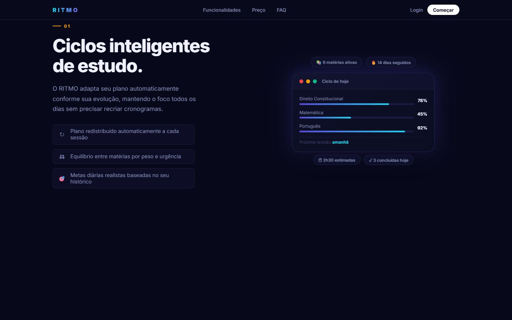

RITMO
Planejador de estudos por assinatura para quem estuda para concurso, ENEM e vestibular.
- Ciclos de estudo que se redistribuem a cada sessão
- Revisões espaçadas pela curva do esquecimento
- Painel com horas, ranking de matérias e pontos fracos
- Tecnologias
- HTML, CSS, JavaScript e GSAPO site de vendas, sem framework, com as animações ligadas ao scroll.
- Vite e TailwindO aplicativo web é compilado com Vite e estilizado com Tailwind.
- Banco, login e pagamentoa confirmar
- Entrega
- Site de vendas + aplicativo web
- Modelo
- R$ 19,90/mês no PIX
- Resultado
- número em breve